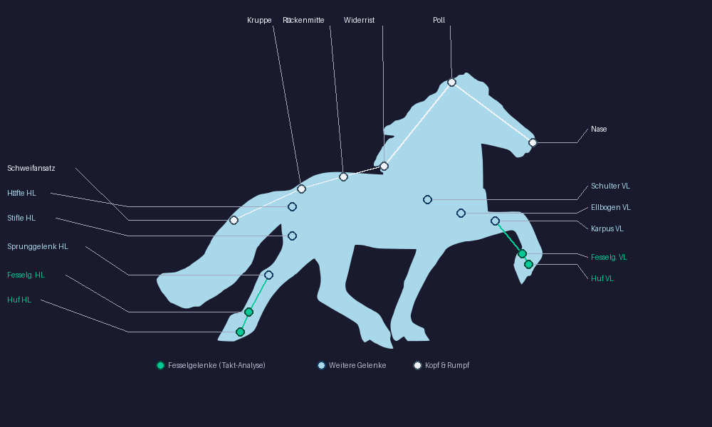

Skelett-Erkennung & Gangart-Analyse
Wie Töltonaut Gelenkpositionen ermittelt und daraus Gangart, Takt und Tölt-Qualität berechnet
Töltonaut analysiert jeden Frame eines Videos in drei Schritten:
YOLOv8n-seg erkennt Pferd (Klasse 17) und Person (Klasse 0) mit Pixel-Masken. Das erste Fokuspferd wird per Zentrum-Distanz über alle Frames verfolgt – kein Wechsel bei ungünstigem Kamerawinkel. Algorithmus und Annotations-UI referenzieren so konsistent dasselbe Pferd.
Aus der Bounding Box werden 31 Gelenkpositionen berechnet – proportional (v0.1) oder per ML-Modell (v0.2).
Die Fesselgelenk-Trajektorien über alle Frames werden ausgewertet: Takt, Gleichmäßigkeit, Sequenz und Fehler.
Ansicht: Pferd schaut nach links (Standard-Kameraposition). Ausgefüllte Punkte = nahe Seite (sichtbar). Ringe = ferne Seite (verdeckt). Zahlen = Keypoint-Index.

Jedes Bein hat eine vollständige Gelenkkette. Die Koordinaten basieren auf den proportionalen Verhältnissen der Bounding Box.
Vorderbein – 5 Gelenke
Nahezu senkrechte Linie.
Karpus = das „Knie" beim Pferd (entspricht dem menschlichen Handgelenk).
Hinterbein – 5 Gelenke
Z-Form durch Sprunggelenk-Knick.
Sprunggelenk = Hock/Tarsus (entspricht der menschlichen Ferse).
Koordinaten als Anteil der Bounding Box: x (0 = Nase, 1 = Schweif), y (0 = oben, 1 = unten). Gelten für Ansicht von links.
| Idx | Name (Code) | Deutsch | x | y | Gruppe | Priorität |
|---|---|---|---|---|---|---|
| 0 | nose | Nase | .05 | .10 | Kopf | – |
| 1 | left_eye | Linkes Auge | .09 | .07 | Kopf | – |
| 2 | right_eye | Rechtes Auge | .11 | .07 | Kopf | – |
| 3 | left_ear | Linkes Ohr | .08 | .02 | Kopf | – |
| 4 | right_ear | Rechtes Ohr | .10 | .02 | Kopf | – |
| 5 | throat | Kehlgang | .15 | .20 | Kopf | – |
| 6 | withers | Widerrist | .30 | .22 | Rücken | – |
| 7 | tail_base | Schweifansatz | .88 | .30 | Rücken | – |
| 8 | l_front_hoof | Huf VL | .22 | .97 | VB nahe | Prio 1 |
| 9 | r_front_hoof | Huf VR | .27 | .97 | VB fern | Prio 1 |
| 10 | l_hind_hoof | Huf HL | .74 | .97 | HB nahe | Prio 1 |
| 11 | r_hind_hoof | Huf HR | .80 | .97 | HB fern | Prio 1 |
| 12 | l_front_fetlock | Fesselgelenk VL | .22 | .87 | VB nahe | Prio 1 · Takt |
| 13 | r_front_fetlock | Fesselgelenk VR | .27 | .87 | VB fern | Prio 1 · Takt |
| 14 | l_hind_fetlock | Fesselgelenk HL | .74 | .87 | HB nahe | Prio 1 · Takt |
| 15 | r_hind_fetlock | Fesselgelenk HR | .80 | .87 | HB fern | Prio 1 · Takt |
| 16 | l_front_knee | Karpalgelenk VL | .23 | .63 | VB nahe | Prio 2 |
| 17 | r_front_knee | Karpalgelenk VR | .28 | .63 | VB fern | Prio 2 |
| 18 | l_hind_knee | Kniegelenk HL (Stifle) | .71 | .58 | HB nahe | Prio 2 |
| 19 | r_hind_knee | Kniegelenk HR (Stifle) | .76 | .58 | HB fern | Prio 2 |
| 20 | l_hip | Hüftgelenk L | .75 | .38 | HB nahe | Prio 2 |
| 21 | r_hip | Hüftgelenk R | .80 | .40 | HB fern | Prio 2 |
| 22 | l_shoulder | Schultergelenk VL | .24 | .35 | VB nahe | Prio 3 |
| 23 | r_shoulder | Schultergelenk VR | .29 | .35 | VB fern | Prio 3 |
| 24 | l_elbow | Ellbogengelenk VL | .22 | .50 | VB nahe | Prio 3 |
| 25 | r_elbow | Ellbogengelenk VR | .27 | .50 | VB fern | Prio 3 |
| 26 | l_hock | Sprunggelenk HL | .73 | .72 | HB nahe | Prio 2 |
| 27 | r_hock | Sprunggelenk HR | .78 | .72 | HB fern | Prio 2 |
| 28 | poll | Genick (Hals-Kopf-Übergang) | .12 | .05 | Topline | Prio 2 |
| 29 | back_mid | Rückenmitte | .58 | .26 | Topline | Prio 2 |
| 30 | croup | Kruppe (Tuber sacrale) | .78 | .23 | Topline | Prio 2 |
VL = vorne links · VR = vorne rechts · HL = hinten links · HR = hinten rechts. In v0.2 (MMPose Horse-10) stehen Indizes 0–21 vom Modell zur Verfügung; 22–30 werden weiterhin proportional ergänzt. Topline-Punkte (28–30) sind neu in v0.1.1 und verbessern die Gangart-Analyse ab v0.2.
In v0.1 werden keine ML-Modelle für die Gelenkpositionen verwendet. Stattdessen werden die Positionen direkt aus der Bounding Box der YOLO-Erkennung berechnet. Jeder Keypoint ist als festes Verhältnis (x-Ratio, y-Ratio) der Box-Abmessungen definiert.
py = y1 + y_ratio × (y2 − y1)
Steht das Pferd nach rechts, wird x gespiegelt:
Die Fahrtrichtung erkennt der Algorithmus per Pixel-Varianz: Der Bildausschnitt hinter dem Kopf hat bei einem Pferd im Profil eine höhere Texturvarianz als der Schwanzbereich – wegen Mähne, Augen und Nüstern. Wenn σ(linker Drittelstreifen) ≥ σ(rechter Drittelstreifen) → Pferd schaut nach links.
Die korrekte algorithmische Klassifikation der Islandpferde-Gangarten basiert auf zwei biomechanischen Kernmetriken, die aus den Zeitstempeln der Fußungsevents berechnet werden:
Phasenversatz zwischen ipsilateralem Hinter- und Vorderhuf als % der Schrittzyklusdauer. Das entscheidende Unterscheidungsmerkmal zwischen Tölt, Schritt, Trab und Rennpass.
FO = Foot-On (lokales Y-Maximum der Fessel-Trajektorie)
T = t_FO_LH[k+1] − t_FO_LH[k] (eine Stride)
Prozentualer Anteil eines Schrittzyklus, in dem ein Bein Bodenkontakt hat. Hoher DF = langsame Gangarten mit vielen Stützbeinen. Niedriger DF = Schwebephase.
FOFF = Foot-Off (Y beginnt zu sinken nach Foot-On)
DF < 50% → Schwebephase möglich
| Gangart | LAP | Duty Factor | Schwebephase | Stützphasen | Takt |
|---|---|---|---|---|---|
| Schritt | ~25% |
60–70% | Nein | 2-Bein, 3-Bein, (4-Bein) | 4-Takt lateral |
| Trab | ~50% |
30–55% | Ja | 0-Bein (Schwebe), 2-Bein diagonal | 2-Takt diagonal |
| Galopp | N/A |
20–30% | Ja | 0-Bein (Schwebe), 1-Bein, 2-Bein | 3-Takt (asym.) |
| Tölt ★ | ~25% |
30–55% | Nein (<1,5%) | 1-Bein, 2-Bein | 4-Takt lateral |
| Rennpass | ~0% |
<30% | Ja (Qualitätsmerkmal) | 0-Bein (Schwebe), 2-Bein lateral | 2-Takt lateral |
★ Tölt und Schritt haben identisches LAP (~25%) – der Unterschied liegt im Duty Factor: Schritt DF ≥ 60% (immer 2–3 Beine am Boden); Tölt DF ≤ 55% (unipedale Stützmomente). Quelle: AJVR 2006, JEB Biomechanik-Literatur
LAP ≈ 0% UND DF < 30% → Rennpass (Schwebephase, lateral simultan)
LAP 15–35% UND DF ≥ 60% → Schritt (hoher Stützphasenanteil)
LAP 15–35% UND DF < 55% → Tölt ← Subklassifikation ↓
DF < 30% UND asymmetrisch → Galopp (gesprungene Gangart)
Das LAP unterscheidet die Tölt-Qualität mit hoher Präzision – Unterschiede, die erfahrene Richter bei hohen Geschwindigkeiten nicht mehr visuell trennen können:
Rollbewegung im Sattel
Taktfehler – Abwertung
Gleichmäßiger 4-Takt
Keine Schwebephase
Diagonal-Tendenz
Visuell kaum erkennbar
Proportionale Keypoints haben konstante normierte Y-Positionen → LAP/DF nicht berechenbar. Fallback: Bbox-Zentrum-Bewegung als Proxy.
bbox_bounce = var(y_center) / h²
Konfidenz ~40–50%. Ausreichend für grobe Gangart-Erkennung, aber nicht für FEIF-Subklassifikation oder Tölt-Qualitätsbewertung.
Echte MMPose-Keypoints variieren → Fesselgelenk-Trajektorien → Foot-On-Detektion per lokalem Y-Maximum.
Foot-Off: Y sinkt nach Foot-On
T_stride: LH_FO[k+1] − LH_FO[k]
Konfidenz 75–88%. FEIF-Subklassifikation möglich. Winkel-Features als Backup.
Fußfolge: HL→VL→HR→VR. Kein Diagonal-Paar gleichzeitig. Keine Schwebephase.
VL+HR und VR+HL simultan. Zwischen den Diagonalen: Schwebephase. LAP = 50%.
Trabeinlage: VL+HR oder VR+HL fußen innerhalb ≤ 3 Frames auf → LAP nähert sich 50%.
Im FEIF-Reglement Abwertung oder Disqualifikation.
Pass-Einlage: VL+HL oder VR+HR simultan → LAP nähert sich 0%.
Rollbewegung im Sattel, sichtbarer Taktfehler.
Der Tölt-Score (0–10, Schrittweite 0,5 wie FEIF) berechnet sich aus:
+ Takt-Regelmäßigkeit × 2,0
− Trabeinlagen × 1,5
− Pass-Einlagen × 0,8
− unregelmäßige Takt-Intervalle × 0,3
Takt-Regelmäßigkeit = 1 − CV/0,5, wobei CV der Variationskoeffizient der Auftrittszeitabstände ist. Bei perfekt gleichmäßigem Takt ist CV ≈ 0 → Regelmäßigkeit ≈ 1,0 → +2 Punkte. Takt-Unregelmäßigkeit > 20 % vom Median zählt als Fehler.
Alle 31 Keypoints (28 Gelenke + 3 Topline-Punkte: Genick, Rückenmitte, Kruppe) aus Bounding Box. Kein ML-Modell nötig. Gangart-Erkennung über Bbox-Bewegungsfeatures. Winkel-Features vorbereitet für v0.2.
ML-Modell mit mAP ≈ 88 (Horse-10). Indizes 0–21 vom Modell, 22–30 proportional. Gangart-Erkennung via LAP + Duty Factor aus Fesselgelenk-Trajektorien. FEIF-Tölt-Subklassifikation (passig/korrekt/trabig). Winkel-Features (Hock θ, Karpus θ) als Backup.
Custom-Training auf annotierten Islandpferd-Turnier-Videos mit allen 31 KP. Bi-LSTM oder XGBoost auf Keypoint-Zeitreihen trainiert (bis 91% Genauigkeit in IMU-Studien). Likelihood-Filterung (refineDLC) + Schrittzyklusnormierung (AutoGaitA).
Jede technische Wahl in Töltonaut hat einen konkreten Grund – Lizenz, Hardware-Einschränkung, Datenverfügbarkeit oder biomechanische Genauigkeit. Diese Sektion erklärt das Warum hinter den Entscheidungen.
Warum YOLOv8n? Kein anderes open-source Modell bietet gleichzeitig Echtzeit-Inferenz auf CPU, Horse-Class (Klasse 17 im COCO-Datensatz) out-of-the-box, und AGPL-3.0-Lizenzkompatibilität. AGPL-3.0 ist Pflicht, weil Ultralytics YOLOv8 AGPL-3.0 ist und das Gesamtprojekt als Derivative Work gilt. Alternativen wie RT-DETR oder DINO sind auf CPU deutlich langsamer und setzen voraus, dass Horse-10-Gewichte separat trainiert werden.
Was:
- Single-shot object detector
vid_stride=2halbiert Verarbeitungszeit ohne merklichen Qualitätsverlustconf=0.3verhindert False Negatives bei schlechten Lichtverhältnissendevice="cpu"– GTX 1070 (sm_61) ist mit PyTorch 2.1+ inkompatibel
Fokus-Pferd-Selektion:
- Größte Bounding Box im ersten Frame
- 8-Frame-Hysterese verhindert ungewollten Wechsel
- IOU-Tracking + Histogramm-Reidentifikation bei Okklusion
Lizenz: Ultralytics YOLOv8 AGPL-3.0 · Horse-Class 17 im COCO-Standard seit 2014 · CPU-only: ~6 fps bei 4K/60fps Input (akzeptabel für Batch-Verarbeitung)
Warum HRNet-W32 auf Horse-10? Horse-10 (Oxford VGG, CC BY 4.0) ist das einzige öffentliche Datensatz mit 22 Pferde-Keypoints, die explizit Fesselgelenke, Karpus, Sprunggelenk und Hüfte enthalten — genau die Gelenke, die für LAP und Duty Factor benötigt werden. MMPose HRNet-W32 erreicht mAP ≈ 88 auf Horse-10 ohne eigenes Training. DeepLabCut SuperAnimal-Quadruped bietet zwar 39 Keypoints, gibt die Fesselgelenke aber nicht als primäre Ausgabe aus. YOLOv8-pose ist ausschließlich auf menschliche Körper vortrainiert.
Was:
- High-Resolution-Net mit 32 Kanälen
- 4×4 Subpixel-Heatmaps pro Keypoint
- Konfidenz-Score pro KP (Likelihood-Filter möglich)
- Apache 2.0 – kompatibel mit AGPL-3.0 des Gesamtprojekts
Datensatz-Wahl:
- Horse-10 CC BY 4.0 – frei nutzbar
- AP-10K CC BY-NC 4.0 – nur für Nicht-Kommerzialles Training
- Animal Kingdom, EquineTrack: Anfrage/Forschungslizenz – ausgeschlossen
Warum regelbasiert statt ML? Es existieren keine öffentlichen Tölt- oder Rennpass-Videos für Training — das ist die kritischste Datenlücke des gesamten Projekts. Ein ML-Klassifikator (z. B. Bi-LSTM) würde auf Schritt/Trab/Galopp-Daten aus generischen Datasets trainieren und auf Islandpferde-Gangarten schlecht generalisieren. LAP und DF sind aus der FEIF-Biomechanik-Literatur (AJVR 2006, JEB) validiert und entsprechen direkt den Kriterien, nach denen FEIF-Richter bewerten. Ein ML-Klassifikator ist für v0.3 geplant, sobald ausreichend nutzer-annotierte Videos vorliegen.
DF-Perzentil-Methode:
Adaptiver Schwellwert statt fixer Grenze — reagiert auf Tölt mit kleiner Hubbewegung und verhindert Fehlklassifikation als Schritt bei ruhigem Tölt.
Schwebephase-Erkennung:
Tölt OHNE Schwebephase, Rennpass MIT Schwebephase — trotz ähnlichem LAP (~25% vs. ~0%). DF ist das entscheidende Trennmerkmal.
Warum stride-basiert? Die Stride-basierte Methode misst tatsächliche Pferdbewegung über Grund, nicht Kamerabewegung. GPS und IMU sind bei Nutzer-Videos nicht verfügbar. Pixel-Verschiebung des Bbox-Zentrums allein ist bei Kameraschwenk unzuverlässig und erzeugt systematisch fehlerhafte Werte (~2,2 km/h Artefakt).
Skalierung:
- Withers-to-Hoof-Distanz stabiler als Bbox-Höhe
- ±4–7% Fehler (vs. ±10–15% bei Bbox-Höhe laut Literatur)
- Stockmaß vom Nutzer oder Schätzung (Standard 1,38 m)
Fallback:
- Lineare Regression auf cx-Trajektorie
- Nur verwendet wenn R² ≥ 0,65
- stride_px = Δx des LH-Fesselgelenks zwischen zwei Foot-On-Events
Warum optischer Fluss? Wenn die Kamera dem Pferd folgt, bewegen sich Hintergrundpixel entgegen der Kamerabewegung. Ohne Korrektur misst jede Geschwindigkeitsberechnung Kamera-Jitter statt echte Pferdebewegung — das erzeugt einen systematischen ~2,2 km/h Fehler bei typischem Schwenktempo.
Methode:
cv2.goodFeaturesToTrackauf Hintergrundpixeln- Pferd-Bbox + 20 px Padding ausgeschlossen
- Himmelbereich (obere 15%) ausgeschlossen (Wolkenbewegung)
cv2.calcOpticalFlowPyrLKfür Punkt-Tracking- Medianer horizontaler Fluss → kumuliert über Stride-Dauer → abgezogen
Vorzeichen-Konvention:
→ Kamera schwenkt nach links
→ Korrektur ist negativ
Konsistente Vorzeichen-Konvention ist kritisch — Vorzeichenfehler würde Schwenk addieren statt subtrahieren und den Fehler verdoppeln.
Warum nicht requestAnimationFrame?
requestAnimationFrame + currentTime hat eine Verzögerung von 1–2 vsync-Zyklen,
weil der Browser das nächste dekodierte Frame erst nach dem Compositor-Commit sieht. Das bedeutet:
der Overlay zeigt Keypoints des vorherigen Frames, während das Video bereits das nächste
anzeigt — sichtbares Ghosting bei 30 fps.
→ cb(now, metadata) // metadata.mediaTime = präzise PTS des angezeigten Frames
→ Frame-Overlay liegt exakt auf dem dekodiertem Frame, kein Ghosting
requestVideoFrameCallback feuert exakt wenn der Browser ein Frame an den Compositor sendet.
metadata.mediaTime ist die präzise Presentation-Timestamp (PTS) des angezeigten Frames —
damit lässt sich der korrekte Keypoint-Datensatz aus dem Backend-Array per binärer Suche abgreifen.
Browser-Support: Chrome 83+, Firefox 132+, Safari 15.4+.
Warum nicht Metric-Depth-Modelle? Depth Pro, UniDepth und Metric3D liefern zwar absolute Meter-Tiefen, benötigen aber auf CPU-only-Hardware (GTX 1070) 5–30 Sekunden pro Frame — bei 30 fps und einem 60 s Video wären das 30–90 Minuten Verarbeitungszeit allein für die Tiefenschätzung. Die Withers-to-Hoof-Contact-Methode ist aus der equinen Biomechanik-Literatur (EquiMoves, Groundline-Estimation-Paper) validiert und benötigt nur den Stockmaß-Wert, den jeder Pferdebesitzer kennt.
Median über 5 aufeinanderfolgende Frames für Stabilität
Genauigkeit:
- Withers-to-Hoof: ±4–7% Fehler
- Bbox-Höhe allein: ±10–15% Fehler
- Huf-Y bei Bodenkontakt stabiler als obere Bbox-Grenze (Kopfhaltung variiert)
Eingabe:
- Stockmaß vom Nutzer (Upload-Metadaten)
- Fallback: Rassestandard Islandpferd 1,38 m
- Widerrist-KP idx 6, Huf-KP idx 8/10 (je nach Standbein)